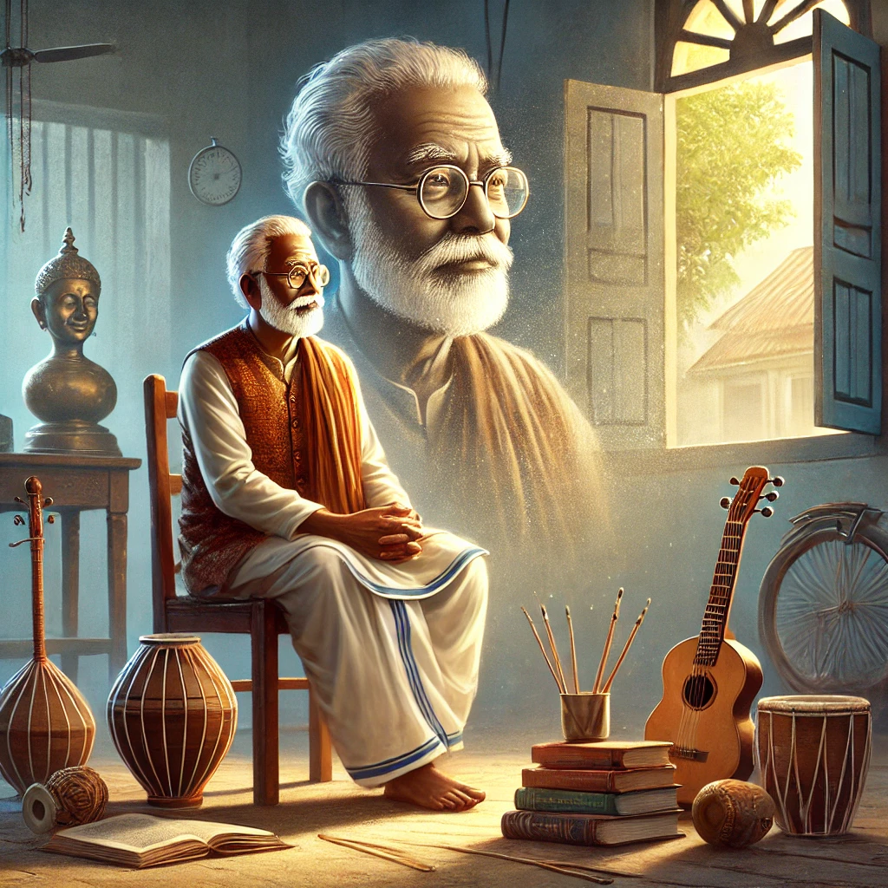
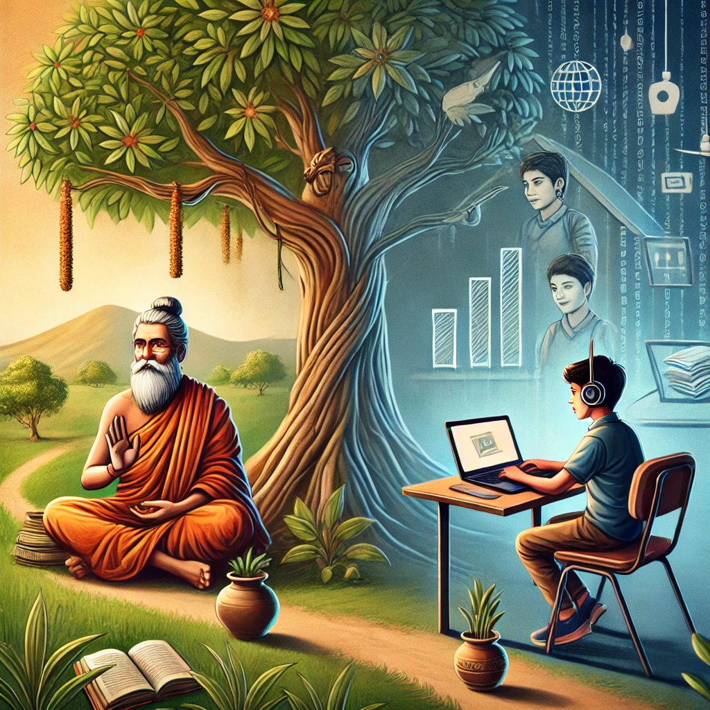

Connecting Ekalavyas to Their Acharyas – Anywhere, Anytime
In a village far from any formal school, a curious student named Ekalavya yearned to learn a skill. There were no teachers nearby, only videos that taught him bits and pieces. He learned alone, passionately, but always longed for a mentor to guide him.
Meanwhile, in another town, a skilled teacher—an Acharya—had few students. Though rich in wisdom, his talents remained hidden, unreached.
Acharya360 bridges this ancient gap. Just as Ekalavya once learned by observing a distant teacher, today's learners can now connect, interact, and grow under real mentorship—even from miles away.
